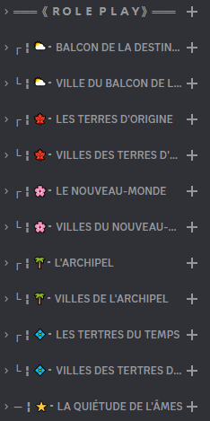
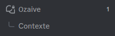

SYSTÈMES RP
Uwu
Hehe
Débuter un RP :
Prérequis :
Avant de jouer, vous devez naturellement avoir une fiche validée par le staff. Pour demander un personnage légitime, il vous faudra ouvrir un ticket et attendre la confirmation que tout est en ordre, d’après les règles du serveur et la logique de l’univers.
Vous trouverez ici le modèle de fiche à suivre pour la création de votre personnage.
Modèle de ficheVous pouvez demander des partenaires de jeu dans le salon fait à cette effigie.
Forums :
L'entièreté des scènes se situe dans les forums offerts par Discord. Vous les trouverez dans les catégories RP du serveur.
Dans chaque forum (régions ou ville) se trouve un salon épinglé nommé “Contexte”. Vous y trouverez toutes les informations sur la région, il est impératif de lire son contenu avant de lancer une scène.
Veuillez par ailleurs ne pas écrire dedans, les permissions des posts ne pouvant pas être écartées de celles du forum, vous avez accès à l’écriture, mais y écrire pourra être vecteur de sanctions.
Vous pouvez décider de suivre un post via le bouton en haut à gauche, il apparaîtra alors de la même façon qu’un fil en dessous du forum et vous pourrez décider d’arrêter de le suivre à tout moment.
Afin de RP dans la région du forum et précisément de son contexte, vous allez vouloir créer un fil. Dans son encadré devront figurer les noms des OCs présents et ceux des joueurs qui les incarnent.
Intervention Aléatoire de MJ :
Les Maîtres du Jeu peuvent, selon votre accord, intervenir à tout moment dans votre RP en introduisant un PNJ, une créature du bestiaire ou un événement aléatoire, une mini quête que vous serez libre de suivre ou non.
Attention, cela ne signifie pas que ça arrivera systèmatiquement. Il s'agit seulement de ponctuer d'imprévu vos aventures de temps à autre, pour laisser place à votre imagination et votre improvisation. Cela se fera donc suivant l'inspiration de nos MJs. Votre accord ouvre seulement cette possibilité.
À la création de votre salon de RP, merci donc de préciser "Intervention aléatoire de MJ: oui ou non"
Vous pouvez également nous en faire la demande, avec l'accord de tous les participants de la scène, afin de relancer la dynamique si vous sentez que votre scène RP s'essoufle, perd en intérêt ou si vous manquez d'inspiration.
Bravo, vous avez désormais un espace de jeu dédié ! Bon amusement !
Quêtes & événements :
Quand ? Où ? Comment ?
Les quêtes et événements sont majoritairement organisés par les membres du staff, par conséquent, leur programmation dépendra de leur temps libre et de leur motivation.
Une fois un MJ et un ou plusieurs OC(s) en place, un forum sera créé dans la région de l’événement. Il se distinguera par un rond rouge devant son nom. Il vous suffira de demander qui peut et veut être MJ pour une quête précise.
Fond :
Sur le fond, les quêtes peuvent prendre différentes textures.
- Dans les cas les plus courants, des créatures du bestiaire seront illustrées dans différentes situations et l'objectif sera de les abattre ou de les chasser. Ce sont en quelque sorte des contrats. Il est possible que des investigations soient nécessaires avant la découverte de la nature du monstre traqué. Tous les membres peuvent MJ les contrats, étant donné qu’ils se veulent régulier.
- Dans d’autres cas, les quêtes ne demanderont pas d’affrontement mais seront plus chill, de la recherche de matériaux, ou bien de l’exploration, au contentement de PNJ divers.
- Les événements seront gérés par des staffs, auront une plus grande portée, que ce soit des enjeux de récompenses, de gloire, de sang ou d’impact sur l’univers. Leurs formes n’étant pas fixes, il n’est pas possible de donner exactement les termes qui vont tous les encadrer. Les MJs seront des staffs ou des OCs engagés dans les évènements comme personnalités publiques.
Affrontements & Mort :
Affrontements :
PvE
Le PvE, notamment les missions seront rythmées par un panel de quêtes consultable directement sur le serveur. Partez du principe que les différents objectifs sont disponibles à la vue de vos OCs en fonction de l’emplacement auquel ils se trouvent (affichages, informations sur la place publique etc).
Il sera précisé dans le contrat si l’OC met sa vie en jeu. Une fois une mission acceptée, le staff partira du principe que vous avez consulté les termes et que vous êtes conscients des risques.
Plus d’informations concernant les missions dans la rubrique des quêtes.
JcJ / PvP
Si deux OCs viennent à se battre en PvP / JcJ (Joueur contre joueur), c’est pour une bonne raison. Certains aiment le RPC, d’autres non, vous devez l’entendre et laisser une chance de fuite en cas d’attaque surprise. De plus, un combat n’arrive pas pour rien, il doit être logique dans la scène et suivre le mouvement des actions précédentes ainsi que la mentalité du personnage.
Les deux rôles players devront définir ce qu’ils sont prêts à mettre en jeu.
De l’argent (IRP) ? Un service (IRP) ? Rien ?
Il faudra aussi qu’un accord unisse les joueurs sur les éliminations.
Accepterez-vous de laisser mourir votre OC ou pencherez-vous plutôt vers du amical, voir même à celui qui fera couler le sang en premier ?
Si, pour éviter une arène malléable en fonction de vos actions, vous souhaitez le plan d’une arène, prenant en compte la région dans laquelle vous-vous trouvez, demandez aux staffs. Nous ne promettons pas du haut niveau. Néanmoins des formes globales avec une échelle de distance, sur Paint, sur papier ou tout autre moyen, est tout à fait possible. De plus, si vous avez des demandes spéciales / en accord entre vous, vous pouvez nous les faire savoir pour que nous rendions la zone singulière.
Mort
Si votre personnage vient à mourir au combat, trois possibilités s’offrent à vous.
- La première, si vous êtes humain, c’est de devenir un mort-vivant pour X monnaie. Des conditions spécifiques en fonction de l’emplacement de votre mort devront être remplies afin de revenir sous cette forme.
- La seconde, c’est de rejoindre les eaux du Dernier Périple en échange de X monnaie. L’âme de votre OC sera alors jugée par le staff. Si votre OC est d’une tendance pure, alors il deviendra un Einherjar. Si votre OC est d’une tendance sombre, il deviendra un corrompu. Des quêtes pourront vous être proposées, si vous êtes un Einherjar, afin de retrouver le monde des vivants. (CF : Statuts)
- La troisième et dernière possibilité, c’est tout bonnement la mort définitive de votre OC.
Quoi qu’il arrive des changements devront être apportés dans la fiche en fonction de l’accentuation des tendances de l’OC. Il faudra donc passer par un ticket juste après la mort de votre OC, nous envoyer le lien du RP, que nous le consultions. Nous vous proposerons la solution adéquate
Si vous souhaitez ramener votre OC d’entre les morts mais ne disposez pas de l’argent nécessaire, vous êtes libre de créer un reroll pour farm et par la suite accumuler assez. Votre OC rejoindra alors une liste d’attente.
Un OC ne peut ressusciter qu'une seule fois et seulement si sa race est éligible.
Système monétaire et Boutique :
Points
Les points sont une monnaie HRP commune à tous vos OCs. Elle s’obtient en exécutant des missions et des contrats sur Yndrill, et permet l’achat d’améliorations et de compétences dans la boutique.
Le montant de points gagnés par mission dépend de la nature et de la difficulté de celle-ci.
Boutique
La boutique d’Yndrill est divisée en plusieurs niveaux, donnant chacun accès à des achats plus intéressants et puissants. Pour débloquer ces niveaux, chaque OC doit gagner de lui-même le nombre de points nécessaires. Il pourra ensuite utiliser sa cagnotte commune pour acheter ce qu’il souhaite.
Exemple :
Joueur 1 possède 2 premiers OCs.
OC 1 a gagné 30 000 points, il a donc accès à tous les niveaux de la boutique.
OC 2 a gagné 10 000 points, il n'a accès qu'au premier niveau.
Leur cagnotte commune s'élève à 40 000 points.
Le joueur décide de dépenser 15 000 points pour obtenir un 3ème OC.
La cagnotte commune descend donc à 25 000 points. OC 3 n'ayant gagné 0 points par lui-même, il peut utiliser les points en commun mais seulement dans le niveau 0, puisqu'il n'a pas accès aux niveaux suivants.
Chaque palier se divise en deux, des achats uniques réalisables une seule fois par OC, et des achats d’utilitaires pouvant être achetés autant que voulu.
Niveau 0 : Accessible directement, sans limite de points
- Achat unique : 1 point d'équipement : ???? points. Permet d'améliorer une pièce d'équipement ou d'en obtenir une nouvelle.
- Utilitaire : Un objet de soin non instantanné : 500 points
Niveau 1 : Accessible à un OC dès 5 000 points acquis
- Achat unique : 1 point de compétence : 5 000 points. Permet d'améliorer une compétence ou d'en obtenir une nouvelle
- Utilitaire :
Niveau 2 : Accessible à un OC dès 15 000 points acquis
- Achat unique :
- Utilitaire :
Niveau 3 : Accessible à un OC dès 30 000 points acquis
- Achat unique : Un OC supplémentaire : 15 000 points. Permet de créer et jouer un 3ème et dernier OC.
- Utilitaire :
Système encore en travaux